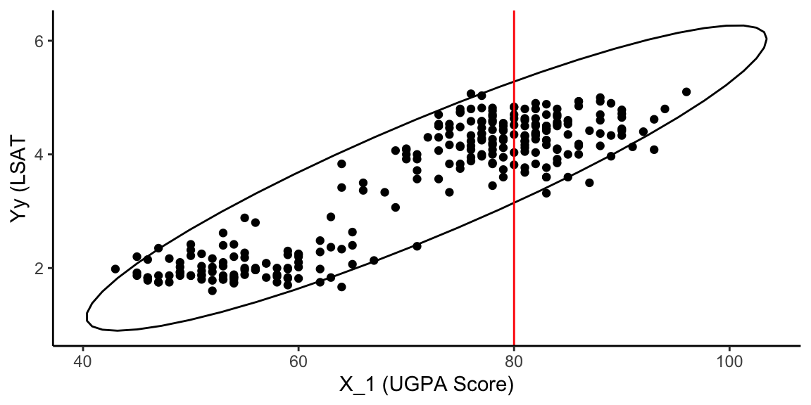

Chapter 3 Factors affecting correlation coefficients
3.1 Overview
Observed values of correlation coefficients are affected by a number of factors to be examined here:
| Factor | Consequences | Fix? |
|---|---|---|
| Restriction of range | Usually reduce r |
“Correction for restriction of range” |
| Outliers | Reduce or increase r |
Ideally, detect a priori |
| Nonlinearity | Misleading r | Ideally detect a priori (later lecture) |
| Dichotomization | Usually reduce r | Don’t dichotomize (corrections avalible but not discussed here) |
3.2 Restriction of range
Within a given law school, there is a near-zero correlation between undergraduate GPA and LSAT scores. This is an instance f restriction of range affecting the correlation.
Suppose we are interested in the realtionship between \(X_1\) (UGPA) and \(Y\) (LSAT). However, individuals measured on \(X_1\) are selected to be in the sample (admitted to law school) only if their score on \(X_1\) is sufficiently high, exceeding some threshold.
In such situation, the range of \(X_1\) is said to be restricted
It is useful ti distinguish between the correlation when selection had occured vs. the correlation if no selection had occurred. The difference can be seen in the following representation of a scatterplot:

If no selection occurs, the relationship between \(X_1\) and \(Y\) is represented by the full ellipse. If selection occursm the relationship is represented by only the section of the ellipse beyoond the selection threshold on \(X_1\). It is evident that the correlation would be greater without selection.
This phenomenon impacts interpretation of correlations in s selection situation. After selecting for \(X_1\), the observed value of \(r_{Y1}\) may suggest a weaaker relationship then is actually present.